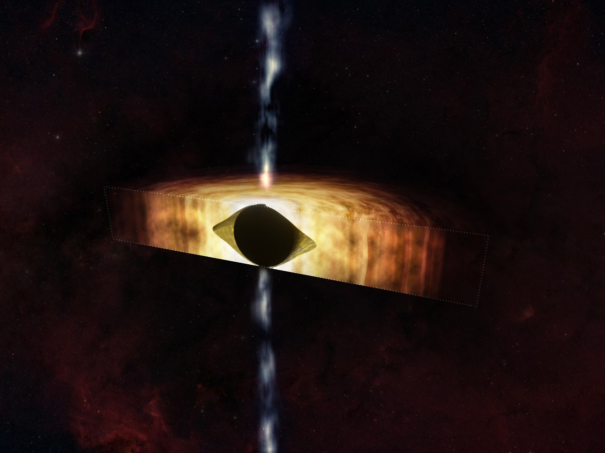
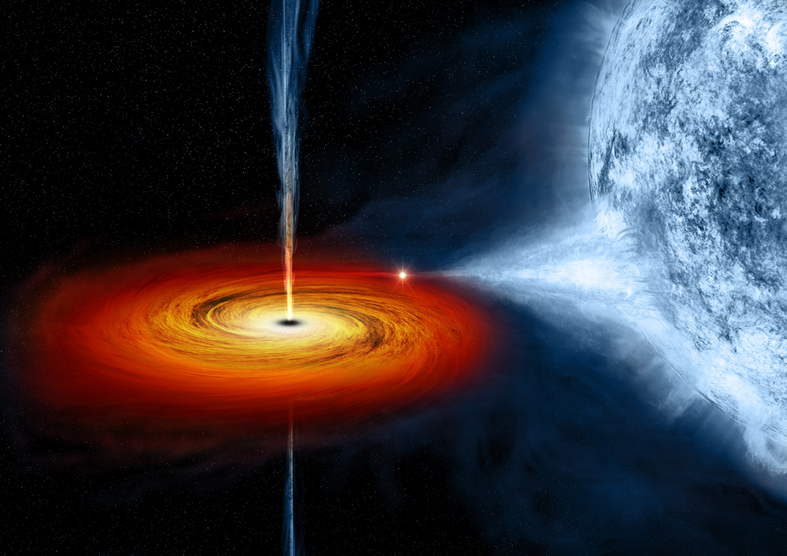
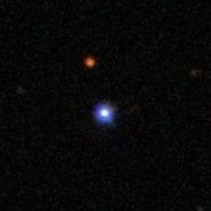
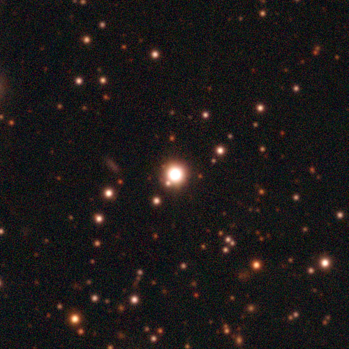

🌌 Sagittarius A*
Sagittarius A* is the supermassive black hole at the center of our Milky Way Galaxy. It has a mass of about four million Suns and is approximately 26,000 light-years away.
📸 Image Credit: Event Horizon Telescope Collaboration

📸 M87*
M87* became the first black hole ever photographed in 2019. It has a mass of around 6.5 billion Suns and lies about 55 million light-years from Earth.
📸 Image Credit: Event Horizon Telescope Collaboration

⭐ Cygnus X-1
Cygnus X-1 was one of the first strong black hole candidates ever discovered. It pulls material from a nearby massive blue star.
📸 Image Credit: NASA / ESA

🌠 TON 618
TON 618 is one of the largest known black holes in the universe. It has an estimated mass of about 66 billion Suns.
📸 Image Credit: ESO / NASA

🛰️ Gaia BH1
Gaia BH1 is the closest known stellar-mass black hole to Earth. It was discovered in 2022 and is about 1,560 light-years away.
📸 Image Credit: ESA / Gaia Collaboration